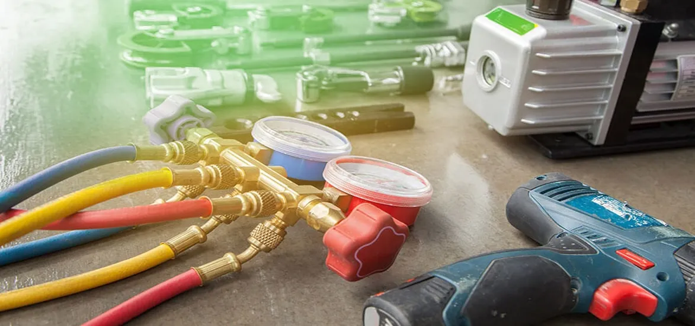

Everything You Need To Learn About HVAC Maintenance And Repairs

The crucial factor of home ownership is maintaining HVAC systems. Similar to vehicles, the heating and air-conditioning units also require regular maintenance to perform at best. Find what top service providers of HVAC repairs and installations, have to say about efficiently handling emergency heating repairs in winters.
Every one of us wants to take care of the home, but mostly we do not know the methods to take the best care of the largest appliances—the HVAC system.
Will it surprise you that the HVAC system meets almost half of your energy requirements? That's why it's crucial to give the best maintenance to the heating and central AC system. Let's look at how professionals fix HVAC.
How Often Should You Do HVAC Maintenance?
Professional HVAC maintenance must be performed on the system two times every year. In between the visits of your technicians, there are various tasks which you must perform on a regular basis to help cooling and heating equipment optimal performance:-
- Test the thermostat batteries and change them every six months.
- Change the filter
- Clean out the indoor HVAC system.
- Clean the exterior of the unit.
- Test the detectors of carbon monoxide
Why does the HVAC system need regular maintenance?
There are various reasons to maintain the cooling and heating systems. Here are a few reasons:-
- If the HVAC system is not working correctly, then it might be working very hard, and as a result, it will reduce comfort and inconsistent temperature.
- Most of the manufacturers will require some routine maintenance to validate the warranty. If you do not perform regular maintenance, you might invalidate the warranty, and regular maintenance will protect it from system repairs and maintain the manufacturer's warranty.
- HVAC system becomes less reliable and efficient because it accumulates dirt and dust throughout the year. It will cost you money in repair bills and increased utility. You might not know, but half of your electric bills go to cooling and heating. That's why making a wise decision regarding the HVAC system might significantly affect the utility bills.
- When it's adequately maintained, you can add some more years to the HVAC system's life, adding years of good usage. Part of the yearly inspection will involve lubricating all parts. The elements which lack lubrication will cause resistance and also increase the usage of electricity. Resistance can also cause equipment to get damaged quickly and require more replacement or repairs.
- Another part of maintenance is inspecting blower components and adjusting and cleaning them. Doing it will help you ensure good airflow for good comfort, and the system efficiency will reduce the airflow problems by up to 20 percent.
How Should You Take Care of Your HVAC System?
Are you curious to know what heating repair includes? Then, take a look at the below points which will show you how professionals fix HVAC.
Change the FiltersWhen was the last time you replaced filters on the unit? A disposable filter will keep the system clean and remove large particles from the indoor air. You can aim to change it every three months. If it is allergy season or you have pets, you can consider replacing the filters more often.
We also recommend you pick filter rates MERV 7-11. If you choose more than this, it will reduce the system's airflow, putting the system under unnecessary strain on the design and negatively affecting its efficiency. If you possess an air purification unit, you should follow the manufacturer's instructions to serve the filters.
Clean the Condensing UnitMost air conditioners have outdoor heat/unit pumps with a fan on top for dispersing heat this summer. Metal fins of the condensing unit get clogged up frequently with grime, pollen, and dirt. Every season, you can spray the systems outside with water for cleaning.
Inspect it virtually and create the clearance of the outdoor unitRemove build-up leaves or vegetation so they cannot interfere with the airflow of the outdoor unit. Trees or bushes can be trimmed so the system will have sufficient clearance of almost 2 feet on every side. If the trees or bushes give excessive pollen, it can clog up the condensing units.
Check the evaporator coil's drain pan and drain pipeIf you cannot find the drain pipe, have your emergency HVAC service technician show up to find it. You can check out the drainpipe of the HVAC system and clear the blockages of mold/algae which can be built up. A wet or dry vacuum might suction out plugged areas and bleach them to clean the rooms.
The clogged drainpipe leads to a typical breakdown scenario. EZ Heat and Air in San Diego, Riverside, and Orange County in California offer services all year. Most customers even learn when water pours through the ceiling until the ceiling saver or protective switch gets installed that switches off the air conditioner to prevent damaging leaks.
Call in a Professional for Regular MaintenanceYou can call a licensed professional to come and perform the preventive HVAC maintenance measures twice a year, including flushing coils and checking out the drainage system and drain pain, checking refrigerant levels, looking for voltage, and vacuuming blower compartments. Spring is the best time to service the AC equipment, and Fall, to service heating equipment. Emergency heating repair by professionals will address any problems before they become a significant inconvenience.
Conclusion
HVAC maintenance is crucial for you to extend the life of heating and cooling systems. There are various types of services that are done in HVAC systems. But instead of DIY, you can call a skilled professional team to do the job, and they will offer the best result possible.
Contact experts at EZ heat and air services to take care of maintenance and repair needs for the heating or air conditioning system model in light commercial and residential settings. We offer a money-back guarantee and 24-hour emergency service. If you want to service your HVAC system from the best professional team, go for EZ Heat and Air services. We serve in San Diego, Riverside, and Orange County of California.